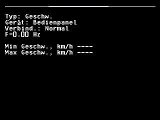

Der Sensor-Statusbildschirm
Wie Sie den Statusbildschirm eines Sensors des Hectare Mini lesen – Typ, Gerät, Verbindung, Livewerte und aktive Alarme – und was jede Sensorart darauf zeigt.
„Information“ im Kontextmenü eines Sensors öffnet dessen Statusbildschirm (Sensoreinstellungen). Er zeigt, was das Panel gerade über diesen einen Sensor weiß – die erste Anlaufstelle, wenn ein Alarm nicht klar ist.

- Kanalwahl – welcher Sensor der gesamten Liste das ist. „MINUS“ zeigt den vorherigen Sensor, „PLUS“ den nächsten; der Bildschirm bleibt geöffnet.
- „Typ:“ – die Sensorart und ihre Nummer.
- „Gerät:“ – wo der Sensor angeschlossen ist, hier „Bedienpanel“. Sensoren am Sensornetz haben diese Zeile nicht.
- „Verbind.:“ – der Zustand der Kommunikation. Tabelle unten.
- Der Livewert dieser Sensorart – hier die Impulsfrequenz F= des Geschwindigkeitssensors, in Hz.
- „Min Geschw., km/h“, wie sie gilt. ---- heißt ausgeschaltet.
- „Max Geschw., km/h“, wie sie gilt.
Auf der Ebene „Service“ kommt oben eine Zeile mit der Adresse des Sensors im Sensornetz hinzu. Hat der Sensor aktive Alarme, erscheinen unten zwei rote Zeilen: „Alarm 1 von 2“ und der Name des gezeigten Alarms.
| Taste | Wirkung |
|---|---|
| „PLUS“ / „MINUS“ | Nächster / vorheriger Sensor. |
| „UP“ / „DOWN“ | Nächster / vorheriger aktiver Alarm dieses Sensors. |
| „MENU“ | Das Kontextmenü dieses Sensors, mit „Überwachung aus“ oder „Überwachung ein“ als erstem Punkt. Auf der Ebene „Fahrer“ bewirkt „MENU“ beim Geschwindigkeitssensor nichts, solange die Maschine fährt. |
| „BACK“ | Zurück zum Bildschirm, von dem Sie kamen. |
Verbindungszustände
| Zustand | Bedeutung |
|---|---|
| „Normal“ | Der Sensor antwortet. |
| „Nicht überwacht“ | Der Sensor ist nicht in der Überwachung: Weder seine Kommunikation noch sonst etwas wird überwacht. |
| „Keine Verbindung“ | Der Sensor antwortet nicht. Rot. |
| „Falscher Gerätetyp!“ | Etwas antwortet, aber nicht die Geräteart, die das Profil erwartet. Rot. |
| „SIMULATION“ | Nur Geschwindigkeitssensor: Die Geschwindigkeit wird simuliert, nicht gemessen. Gelb. |
Die Livewerte und die Alarme werden nur gezeigt, solange der Sensor überwacht wird, antwortet und von der richtigen Art ist.
Was jede Sensorart zeigt
| Sensor | Livewerte |
|---|---|
| Geschwindigkeitssensor | F= in Hz; bei zwei Sensoren F1= und F2=. Dann „Min Geschw., km/h“ und „Max Geschw., km/h“. Bei Motoren, die nach Gewicht dosieren, sind die Grenzen die, die die Motoren halten können, eingeengt durch die beiden Einstellungen; eine Grenze, die die Einstellungen nicht erfüllen können, steht in Rot. |
| Korn- und Düngersensoren | Status: und der Zustand des Sensors – unten. |
| Dosierersensor | F= in Hz, mit drei Nachkommastellen. |
| Gebläsesensor | F= in Hz. |
| Drucksensor | P= in kPa. |
| Behältersensor | Pin: mit dem Pegel am Eingang, "0" oder "1". |
| Arbeitsstellungssensor | „Position: Arbeit“ oder „Position: Transport“, und Pin: mit dem Pegel am Eingang. |
| Zündung, Öldruck, Batterieladung, Kraftstoffstand, Luftfilter | Pin: mit dem Pegel am Eingang. |
| Durchflusssensor für Flüssigdünger | Status: „Betrieb“, oder Working:Tramline in einem Fahrgassen-Durchgang; Flow= in l/min. |
| Dosierermotor | Status: „Betrieb“ oder „Defekt“; nach einer Störung Letzter Fehler: mit dem Code des Steuergeräts. |
Zustände eines Korn- oder Düngersensors
| Status | Bedeutung |
|---|---|
| „Betrieb“ | Normal. Working:Tramline – normal, im Fahrgassenmodus dieser Bahn. |
| „Konfiguration“ | Der Sensor hat neue Einstellungen vom Panel erhalten und übernimmt sie gerade. |
| „Kalibrierung läuft“ | Der Sensor führt seine Erstkalibrierung durch; das dauert einige Sekunden. |
| „Verstopft“ | Etwas blockiert den optischen Kanal – Schar oder Saatrohr können verstopft sein. Rot. |
| „Fremdlicht“ | Zu viel Sonnenlicht fällt auf den Sensor; er kann nicht zählen. Rot. |
| „Defekt“ | Der Sensor ist ausgefallen und muss ersetzt werden. Rot. |
| „Unbekannt“ | Eine andere Störung, die sich nicht bestimmen lässt. Rot. |
Ihre Maschine tut etwas, das diese Seite nicht beantwortet? Schreiben Sie an support@agriwelt.com — es antwortet ein Ingenieur.